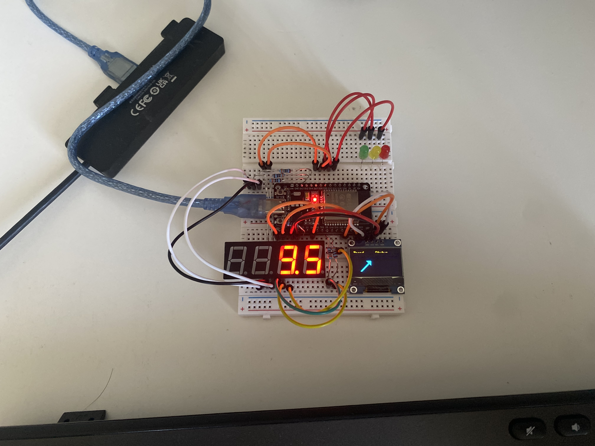

The objective of this project was to provide a physical dashboard representing Dexcom CGM data and status. The benefit of such a device is convenient visualization of glucose data, which otherwise requires opening your phone and then app.
Established Bluetooth communication with Dexcom G7 device to fetch glucose monitor data including the reading, trend, and timestamp
Used 7-segment disply, OLED display and LEDs to display the current reading, the trend, time since the reading, and a status indicating in-range (green), high (yellow), and low (red)
Designed a custom PCB after protptyping to orient components as desired and safeguard electrical connections
Designed an encasing for the device using CAD tools for presentability.

Figure 1: Top-down view of the finalized dual-layer layout showing clean horizontal routing and copper tracking.
Video 1: Hardware validation and real-time 7-segment display streaming demo.